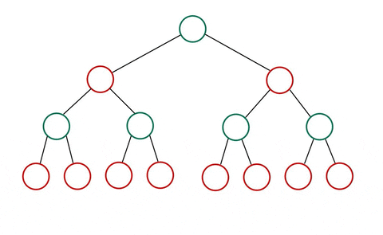
Pikachu is playing Chess against his opponent. His opponent is a bot that is constantly destroying him. Pikachu thinks to himself. How does it do it? How does the opponent AI work? How do we make our own to destroy their NPC?
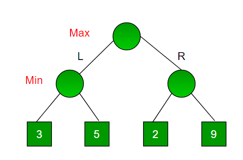
One popular adversial AI algorithm is minimax. It is basically an agent that maximizes its utility (payoff). The algorithm looks like this:
$$ \begin{array}{c c} \begin{aligned} &\mathbf{define}\; max\_value(s): \\[4pt] &\qquad \mathbf{if}\; \text{is-terminal}(s),\; \mathbf{return}\; utility(s) \\[4pt] &\qquad v = -\infty \\[4pt] &\qquad \mathbf{for}\; s'\;\text{in}\; successors(s): \\[4pt] &\qquad\qquad v = \max(v, min\_value(s')) \\[4pt] &\qquad \mathbf{return}\; v \end{aligned} & \begin{aligned} &\mathbf{define}\; min\_value(s): \\[4pt] &\qquad \mathbf{if}\; \text{is-terminal}(s),\; \mathbf{return}\; utility(s) \\[4pt] &\qquad v = \infty \\[4pt] &\qquad \mathbf{for}\; s'\;\text{in}\; successors(s): \\[4pt] &\qquad\qquad v = \min(v, max\_value(s')) \\[4pt] &\qquad \mathbf{return}\; v \end{aligned} \end{array} $$
Notice the image. Imagine it is your turn (root node). You are always trying to get the maximum value. Of course, the corollary is that the opponent is trying to minimize you. We are looking at the tree from your perspective. The max function is what you run while the opponent is running the min function. Notice they are the same thing. From the opponent's perspective, they are running the max function.
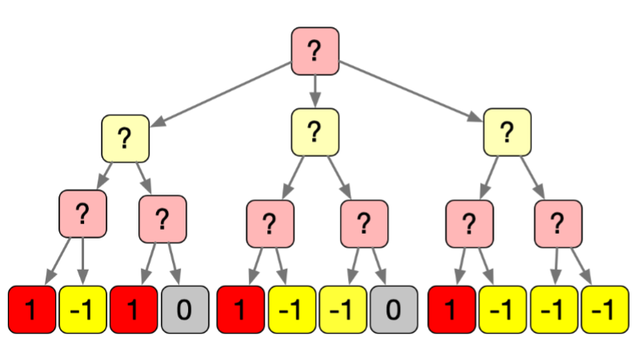
Suppose you estimate (using some heuristic) the corresponding game states after some $\gamma$ rounds into the future Our job is to figure out what the actual state will be given some state space. In this case, we are red (root).
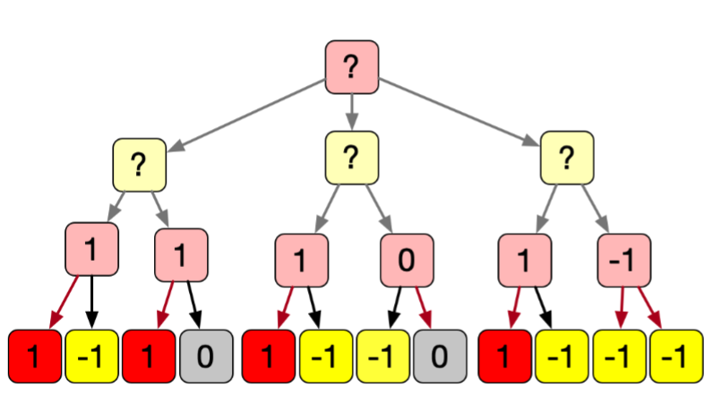
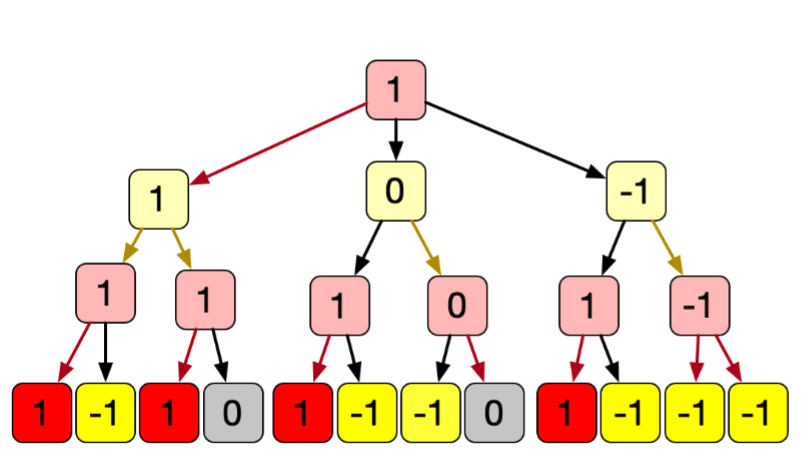
If we simulate a bunch of scenarios, there are wayyyyyy too many scnearios to play out. What can be done about this?
Some problems are already symmetrical.
We should treat symmetrical cases as the same thing.
For example, in tic-tac-toe, starting in another of the corners is the same thing.
If we rotated our board, we would end up in effectively the same case.
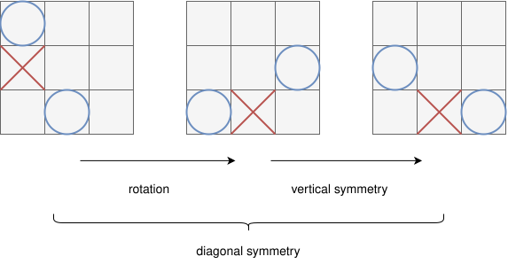
Here is minimax with $\alpha - \beta$ pruning: $$ \begin{array}{c c} \begin{aligned} &\mathbf{define}\; max\_value(s, \alpha, \beta): \\[4pt] &\qquad \mathbf{if}\; \text{is-terminal}(s),\; \mathbf{return}\; utility(s) \\[4pt] &\qquad v = -\infty \\[4pt] &\qquad \mathbf{for}\; s'\;\text{in}\; successors(s): \\[4pt] &\qquad\qquad v = \max(v, min\_value(s', \alpha, \beta)) \\[4pt] &\qquad\qquad \mathbf{if}\; v \ge \beta,\; \mathbf{return}\; v \\[4pt] &\qquad\qquad \alpha = \max(\alpha, v) \\[4pt] &\qquad \mathbf{return}\; v \end{aligned} & \begin{aligned} &\mathbf{define}\; min\_value(s, \alpha, \beta): \\[4pt] &\qquad \mathbf{if}\; \text{is-terminal}(s),\; \mathbf{return}\; utility(s) \\[4pt] &\qquad v = \infty \\[4pt] &\qquad \mathbf{for}\; s'\;\text{in}\; successors(s): \\[4pt] &\qquad\qquad v = \min(v, max\_value(s', \alpha, \beta)) \\[4pt] &\qquad\qquad \mathbf{if}\; v \le \alpha,\; \mathbf{return}\; v \\[4pt] &\qquad\qquad \beta = \min(\beta, v) \\[4pt] &\qquad \mathbf{return}\; v \end{aligned} \end{array} $$
There are many ways to approximate utility:
This basically simulates one path through the game tree. $$ \begin{array}{l} \mathbf{define}\; rollout(s_0) \to \mathbb{R}: \\[4pt] \qquad \begin{aligned} &s = s_0 \\[4pt] &\mathbf{if}\; s\;\text{is terminal}: \\[4pt] &\qquad \mathbf{return}\; utility(s) \\[4pt] &a = \text{random action for state } s \\[4pt] &s = \text{simulate } a\;\text{from } s \end{aligned} \end{array} $$
We can also choose which path to search since they all have different expected utility. The mutli-armed bandit problem asks us which node to sample next. The bandit chooses which moves to try, either exploiting (keep choosing nodes that look good) or exploring (choose new nodes). Basically you're a gambler at a casino playing slot machines. There are lots of options. You want to try to find the highest payout slot machine to maximize profits (and dopamine).
Let $v_{j,1}, v_{j,2}, \dots, v_{j,p_j}$ be rewards from $n_j$ plays on machine $j$.
The experimental mean utility is:
$$
\bar{v_j} = \frac{\sum^{n_j}_{i=1} v_{j,i}}{n_j}
$$
Exploitation: Spam what the machine we believe has the highest $\bar{v_j}$
Exploration: Try a machine with a low $n$
Randomly pick a number. If the number is less than some $\epsilon$ value, we shall use a machine. This part of exploration. Otherwise, we exploit the best machine we know. $$ \begin{array}{l} \mathbf{define}\; \epsilon\_greedy(machines, \epsilon, n): \\[4pt] \qquad \begin{aligned} &\mathbf{for}\; i\;\text{in}\; [1, \ldots, n]: \\[4pt] &\qquad \mathbf{if}\; \text{random}() < \epsilon: \\[4pt] &\qquad\qquad machine = \text{random\_choice}(machines) \\[4pt] &\qquad \mathbf{else}: \\[4pt] &\qquad\qquad machine = \arg\max_{m \in machines}\; m.\text{mean\_utility}() \end{aligned} \end{array} $$
The intuition is that if we haven't played a machine much, it might be very good. We can assign some upper confidence to all our machines. $$ \mathrm{UCB1}_j = \bar{v}_j + C\sqrt{\frac{\log(n)}{n_j}} $$ Where:
But what if the games are played by chance? For example when the opponent bot moves, it might first sample some distribution then make a move. Maybe sometimes the other bot miscalculates their heuristic, hallucinates, then blunders. For things with chance, we need to account for the expected value. We can do this with expectimax which is just the expected value version of mini max.
Recall that expected value (we'll refer to this as the expected utility): $$ E[X] = \sum P(X = x) x $$ Now we just need to calculate the expected value per each "chance" node to see what we will take. Previously we just took the min / max of our branches but we need to add an extra phantom chance node for the expected value.
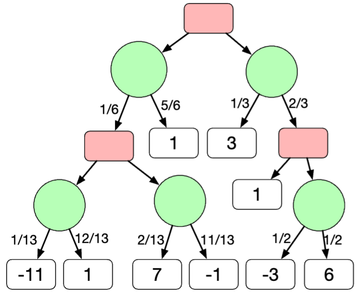
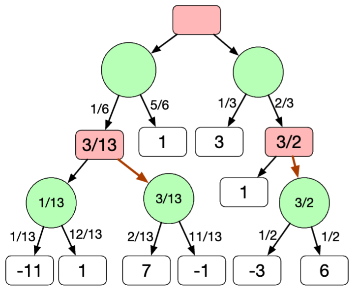
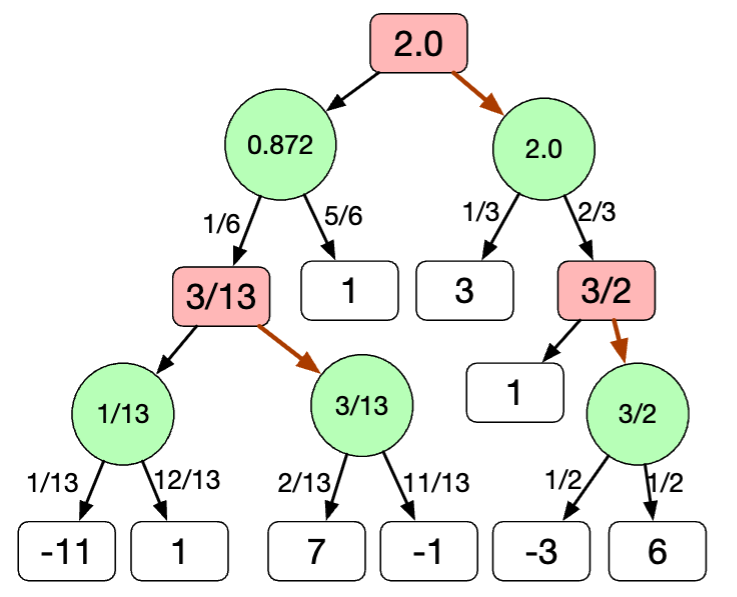
Expectiminimax is a hydrid of Expectimax + Minimax except we alternate between choosing the min and max (instead of just the max). Basically run the minimax but add the chance nodes in since these games are stocastic (by chance). It looks something like this:
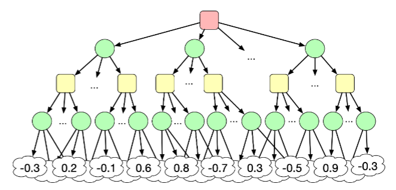

While not a chess bot, AlphaGo (made by Google's DeppMind) is a similar bot for the game, Go. Go has a much larger board and thus a lot more possibilities (more states - about $10^100$), making search nearly impossible. Sadly it destroys the top Go players. Here is how it works (exntension of everything I talked about above):
Going back to monte carlo tree search (MCTS), we replace some of the steps with NN.
Alpha Go was trained entirely through self-play (we are cooked).
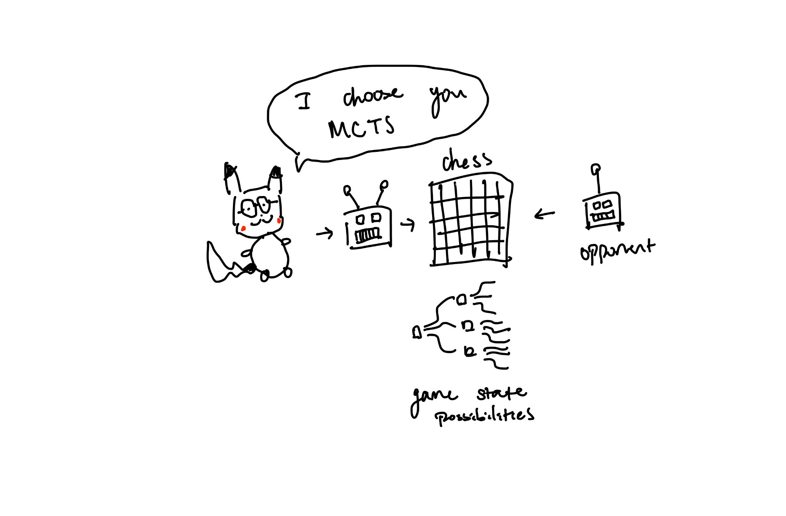